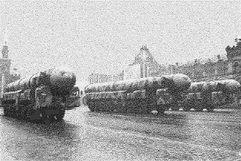

Военной академии РВСН имени Петра Великого 7 декабря 2000 года исполнилось 180 лет. Это высшее военное учебное заведение, со славной историей, по уровню профессиональной подготовки специалистов - одно из лучших в Российской Армии.
В свое время академию окончили Министр обороны РФ Маршал РФ Игорь Сергеев, нынешний Главнокомандующий РВСН генерал армии Владимир Яковлев, многие другие видные военачальники. За 180 лет существования академии здесь подготовлено свыше 41 тысячи высококлассных специалистов, офицеров артиллеристов и ракетчиков. В настоящее время ее возглавляет генерал-полковник Николай Соловцов.
История этого старейшего военно-учебного заведения берет свое начало с 25 ноября (7 декабря н. с.) 1820 года. Тогда в Санкт-Петербурге при учебной артиллерийской бригаде было открыто Артиллерийское училище, в 1849 году получившее почетное наименование «Михайловское». В 1855 году училище переименовано в Михайловскую артиллерийскую академию.
В 20-х годах XX века в академии получила развитие дифференциация военно-технического образования. Были созданы факультеты, постепенно, но неуклонно, складывалась кафедральная структура. В стенах академии зародились, получили развитие ряд военно-технических направлений, впоследствии оформившихся в шесть самостоятельных учебных заведений (Военно-механический институт, военные академии: моторизации и механизации, химической зашиты, связи, артиллерии, ПВО сухопутных войск), три факультета и пять военных кафедр в вузах страны.
В Великой Отечественной войне 1941-1945 годов воспитанники академии с честью и достоинством решали сложные задачи артиллерийского обеспечения боевых действий войск на фронтах, ковали победу в тылу. В летописи героических свершений академии имена 117 Героев Советского Союза. 355 артиллерийских офицеров - выпускников академии пали смертью храбрых за свободу и независимость Родины.
В 50-е годы академия возглавила новое военно-техническое направление подготовки офицерских кадров и научных исследований - ракетное.
На протяжении многих лет непосредственное участие в создании, испытаниях и эксплуатации ракетных комплексов принимали выпускники академии, прославленные генералы: М. И. Неделин, Н. А. Дегтярев, М. Г. Григорьев, А. И. Соколов, А. И. Семенов, Ф. П. Тонких, Е. Б. Волков, Г. Н. Малиновский, Ю. А. Яшин, а также Г. Е. Алпаидзе, Е. В. Бойчук, А. А. Васильев, Л. С. Гарбуз, К. В. Герчик, Л. И. Долинов, А. С. Калашников, А. А. Курушин, А. С. Матренин, А. И. Нестеренко, Г. Ф. Одинцов, А. Ф. Тверецкий, Д. X. Чаплыгин, Н. Д. Яковлев и. многие другие.
Воспитанники академических школ, ставшие основой офицерского корпуса стратегических ядерных сил Отечества, в последние десятилетия в решающей мере способствовали достижению паритета по ракетно-ядерному оружию СССР и США. Велик их вклад во всестороннее освоение космоса, развитие передовых технологий, обеспечение ядерной безопасности, предотвращение экологического кризиса, проведение конверсии.
В 1997 году «в целях возрождения исторических традиций Российской Армии и учитывая исключительные заслуги Петра Первого в создании регулярной армии". Указом Президента России «О переименовании Военной академии имени Ф. Э. Дзержинского» академия переименована в Военную академию РВСН имени Петра Великого.
В настоящее время академия, имея в своем составе семь факультетов, более шестидесяти кафедр и научных подразделений со значительным научным потенциалом (более 100 докторов наук, профессоров, более 550 кандидатов наук, доцентов, 30 Заслуженных деятелей науки и техники РФ, более 50 академиков и членов-корреспондентов национальных и международных академий, 15 лауреатов Ленинской и Государственных премий, а также премий Президента и Правительства РФ), готовит офицерские кадры командного и инженерного профилей в широком спектре военно-исторических направлений.
На протяжении нескольких лет здесь успешно функционирует факультет Православной культуры, возглавляемый протоиереем Дмитрием Смирновым. Он, был открыт первым в вузах Вооруженных Сил России, тем самым восстановив преемственность традиций православного образования российских воинов.
Сегодня Военная академия РВСН имени Петра Великого ориентирована на решение наиболее важных и приоритетных проблем обеспечения национальной безопасности России, военного строительства, развития ракетного и специального вооружения, поддержания боевой готовности войск, совершенствование системы и технологий профессионального военного образования.
4 декабря 2000 года Военную академию имени Петра Великого посетили и поздравили Патриарх всея Руси Алексий II, Министр обороны РФ Маршал РФ Игорь Сергеев, другие официальные лица. От имени Президента РФ Министр обороны РФ вручил академии бронзовый бюст Петра Великого работы известного скульптора Владимира Суровцева.
2000г
Пресс-служба РВСН